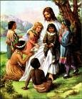

In the Beginning Was the Word

A Grand Entrance?
Every December, we begin to anticipate the biggest celebration of the year: Christmas! All the stores are aglow with lights and tinsel (earlier and earlier every year, it seems), we string lights around our houses and decorate a tree, and even the streets of cities and towns shine with twinkling lights around many of the buildings. And the biggest excitement of all? Presents! What will we get? Will it be what we've been hoping for? We just can't wait for December 25th!

A Very Quiet Entrance
So, is that how it happened 2000 years ago? Were people waiting expectantly: did they have their houses all decorated in anticipation of the birth of Jesus? Had they bought presents for each other to celebrate this long-awaited birth? When He was born, did an announcement go out all over the world that the Savior had come at last?
Not quite.

When Jesus was born in Bethlehem, also called the City of David (remember?), only a handful of people were really aware of it. There were Mary, Jesus' mother, and Joseph, her fiancé. The people who owned the stable of the inn where Mary and Joseph were staying were probably aware that the woman had given birth, but it had no particular significance to them.
But there was great rejoicing in heaven, we know, because Luke 2:8-14 tells us that a large group of angels appeared to some shepherds on the night of Jesus' birth. They not only announced that a baby boy named Jesus had been born, but they actually proclaimed that He was the Messiah that the Jewish people had been waiting for for so long!
But it would be another thirty years before anyone else would begin to find that out.

Four Men, Four Stories
In the years following Jesus' death, resurrection and ascension into heaven, four different men were inspired to write about the life of Jesus. The first four books of the New Testament are named for the men who wrote these biographies (they are generally called Gospels): Matthew, Mark, Luke and John.
They didn't discuss it with each other; they may not even have known that anyone else was writing the story of Jesus. Matthew, Luke and John had almost certainly read the Gospel of Mark; scholars believe it was the very first biography of Jesus to be written. But the four gospels were written independently of each other.

When a person tells a story about an event, he or she will usually try to include what, in their opinion, the most important parts are. This was the case with Matthew, Mark, Luke and John. Some include events that others do not; some tell events in a slightly different order.
For instance, only Matthew and Luke tell the story of Jesus' birth. Perhaps, in Luke's mind, it was important for people to know that Jesus was born of a virgin girl. Mary's fiancé, Joseph, was not Jesus' father; Jesus was the son of God. (Luke 1:26-38)
Matthew's gospel begins with the family tree of Jesus. Do you remember how, in that long-ago time, God promised Abraham that the world would be blessed through a king that would come from his descendants (Genesis 12:3)? Matthew takes care to show us that Jesus was a direct descendant of King David, who was a direct descendant of Abraham. Jesus was the fulfillment of that ancient prophecy.
In the case of Mark and John, they seem to take for granted that, when they were writing about Jesus, everyone would know who they were talking about: In His days here on earth, Jesus was very, very famous. So, Mark and John begin their stories of Jesus at the point when He began His earthly ministry, that is, when Jesus was about thirty years old.

An Unexpected Messiah
When we learned about the prophets who predicted that Israel would fall to Assyria and Babylon, we also learned that those same prophets were predicting that a King, a Messiah, a Savior would come out of King David's line. These prophecies gave the Jews hope that Israel would again become a great nation, that a king would come to conquer all of Israel's enemies and make them a super-power that would rule over the world.
But the Jews weren't reading ALL of the prophecies; or, if they were, they greatly misunderstood some of them. The prophets gave two descriptions of the Messiah God would send. One was, indeed, to be a mighty Ruler. What the Jews did not understand was that this King would come from a most unremarkable place and that He would not come with great fanfare (remember the quiet night in obscure little Bethlehem?). This new King would be a man who would know sorrow, grief and pain on earth, not kingly glory and power.
As a defeated, demoralized people, the Jews were not looking for a Messiah like the humble person Jesus was; they were looking for someone much more spectacular than that.
And so it was that, when Jesus came and lived among them, they did not recognize the Messiah when they saw Him.

The Teaching of Jesus
Remember that Jesus grew up in a place that was under the rule of another country: by this time, it was the mighty Roman Empire. Jesus grew up in a very simple society; the Jewish people were very devoutly religious, and His neighbors were farmers or fishermen or tradesmen (Joseph, His mother's husband, was a carpenter by trade).
Perhaps because of this, Jesus tried to teach spiritual truths by telling stories, called parables, that often involved things people in his society would have been familiar with and understood:

- a farmer sowing seed in his field (Matthew 13:2-23)
- a son who rebels against his parents, but returns to them with great remorse for his sins (Luke 15:11-32)
- a shepherd who loses one of his sheep (Matthew 18:10-14)
The Pharisees
In Jesus' day, the priests (the Bible also calls them Pharisees--a word that means "separate ones") ruled the daily lives of the Jews. The priests came from one of the twelve tribes of Israel that God had selected specifically for that role: the Levites (from the tribe of Levi). They considered it their job to keep the Jewish people from straying, as they had in the past. It was their job, they thought, to read and interpret the Bible for the people. (Remember what we said earlier about God intending the Bible for everyone?)
Jesus was not from the tribe of Levi, so Jesus was not a priest.

To be a rabbi, or teacher of Biblical truths and knowledge, a man had to go through a long period of training in a special rabbinical school.
Jesus had not gone to rabbinical school, so the Pharisees did not consider him "qualified" to be a teacher.
So, almost from the beginning of His ministry, Jesus was at odds with the religious rulers. Still, crowds of people gathered to hear Jesus teach. In one of His most famous sets of teachings, called The Sermon on the Mount (it can be found in both Matthew 5 and Luke 6), virtually every point He made went counter to what the Pharisees would have the people believe.

Some of the main ideas that Jesus wanted his followers to learn were:
- God loves people and wants them to love Him back. One of the ways of showing love for God is by obeying not just the letter of the law, but by obeying the spirit of the law, as well. So, as well as being honest, Jesus told His followers to be merciful, kind and just.
- Jesus wants His followers to be known by their love: love for their fellow believers, love even for their enemies. God has promised to forgive believers of their sins; He wants us to forgive each other.
The most important thing Jesus wanted His followers to know was that He, Jesus, was the Son of God, and that salvation from sin comes only through Him. One of the most famous verses in the Bible declares the New Covenant God was making with mankind, John 3:16:
For God so loved the world that He gave His only Son, so that whoever believes in Him should not perish, but have everlasting life.
This declaration from Jesus was revolutionary for two reasons: first, the idea that Jesus was the Son of God was unacceptable to many Jews. How could a mere man be God? The second idea that religious leaders of Jesus' day could not accept was that salvation was no longer reserved just for Jews. Jesus said that ANYONE who believes in Him can belong to God's Kingdom (John 1:12).
The Sadducees
The Sadducees, a prominent, often wealthy, group of Jews who lived in Jesus' day, had a sort of political arrangement with the Romans, so that they enjoyed a certain amount of political power. The Sadducees sometimes took on the task of collecting Roman taxes from their fellow Jews, and often were dishonest about it, requiring people to pay more than was actually owed so they could keep a share for themselves. The Sadducees were considered traitors by many of the Jewish people because of their close ties with the hated Romans.
There was often talk of rebellion among the Jews; they chafed under the harshness of Roman rule. The Sadducees considered it their job to keep the peace between the Jews and the Romans. The less trouble the Jews caused the Romans, so the Sadducees thought, the easier it would be for everyone.

The Problem With Jesus
As we saw earlier, Jesus went about teaching crowds of people and spreading the good news to everyone about God and His love. The Pharisees did not like this at all; they wanted to be the only religious authority among the Jews. Jesus taught people to think more deeply about spiritual matters than the priests had ever done, and they loved Him for it.

The Sadducees did not like the large crowds that Jesus was attracting, either. A crowd of people could not be easily controlled. If Jesus wanted the crowds around Him to follow Him in a rebellion against Rome, what could they do to prevent it?
The Sadducees knew that even a large crowd of Jews was no match for the might of the Roman army. If the Romans had to put down a Jewish rebellion, they would absolutely crush them (and about 35 years after Jesus' earthly life, that's exactly what they did). Their political power would mean nothing with the Romans anymore, and the Sadducees were not about to lose their power because of a rabble-rousing nobody like Jesus!

The absolute worst thing that Jesus did, though, was to proclaim to people that He was actually the Son of God. Jesus told them that He was the Messiah that they had been waiting for for so long. To the Pharisees, this was blasphemy (the utmost disrespect for God)! Under Jewish law, it was a crime punishable by death.
Time and again, Jesus had performed signs and miracles to back up His claim to be the Messiah: He healed the sick, made blind people see, and caused lame people to walk again. He had even raised a man from the dead!
Jesus was perceived as a threat both to the Pharisees (because He was causing people to doubt their authority) and to the Sadducees (because He might be a threat to their power).
The Pharisees and the Sadducees were not normally friendly or cooperative with each other, but now they had a common enemy: Jesus.

One night, when Jesus was praying, Judas Iscariot, a man who had been in Jesus' closest set of friends (His twelve disciples), led a group of Pharisees and Sadducees to where he knew Jesus liked to pray, the Garden of Gethsemane. Jesus did not resist being arrested, although He knew He had committed no crime.
Jesus' accusers took Him to Caiaphas, the High Priest of the temple, to conduct a secret trial. They told Caiaphas that Jesus was guilty of blasphemy because of His claim to be the Messiah.

As He stood before the High Priest, Jesus said, "I am the Messiah, and you will see me sitting at the right hand of of God." (Mark 14:62)
Although false witnesses had been gathered to give "evidence" against Jesus, Caiaphas decided that Jesus' statement alone was a confession of guilt. His verdict was that Jesus should be put to death.
The Jews could not carry out capital punishment without the permission of the Roman governor, Pontius Pilate. The priests brought Jesus before Pilate and told him that Jesus had committed treason: if He claimed to be the Messiah, they said, that was the same as saying He was King of the Jews. Under Roman law, no one could call himself a king except Caesar.
Pilate did not really think that Jesus was making a serious claim to be king, since He did not even offer up a defense for Himself as He was being tried. But the Jewish priests were insistent that Jesus be put to death. Even when Pilate offered them a choice of having a convicted murderer, Barabbas, freed, or having Jesus freed, the people all shouted for Jesus to be put to death. (Mark 15:6-13)

Jesus Dies And Is Resurrected
Crucifixion was a form of capital punishment used by the Romans. It was a most shameful way to die. Although Jesus is commonly portrayed in art as wearing a loin cloth, He was actually stripped of his clothing, so that He was naked for all to see. It was especially shaming because crucifixion was reserved by the Romans for the worst kinds of criminals.
After a night of being beaten, first by His Jewish accusers and then by the Roman guards, Jesus was made to carry His own cross to the place where He was to be crucified. He was so weak from all of His beatings that He could not bear up under the weight of the cross; a slave they passed along the way was made to carry Jesus' cross for Him.
When they arrived at the place of crucifixion, the Roman guards nailed Jesus' hands to the cross. They then gambled for the clothing they had taken from Him.
Although it usually took several days of intense suffering to die on a cross, Jesus' wounds and loss of blood from the night before probably hastened His death. He died the same day He was nailed to the cross.

While most of Jesus' friends had deserted Him when He was arrested in the Garden of Gethsemane, there was a man named Joseph of Arimathea who had the courage to go to Pilate and ask for Jesus' body so that it could be properly laid to rest.
He wrapped Jesus' body in linen and put it in a tomb that had been carved out of rock. He then rolled a large stone over the entrance and went his way.
Jesus had tried to tell His disciples many times that He would have to die as the final sacrifice for the sins of mankind, but they had never understood Him. If Jesus was the Son of God, they reasoned, if He was the Messiah promised of God, how could He ever die?
On the third day after Jesus died, some of the women who had been His friends went to His tomb. It was the Jewish custom to anoint the deceased person's body with certain special spices. As they were going, they wondered among themselves how they would ever move the stone that had been rolled in front of the tomb.

When the women arrived, they were amazed to find that the stone had already been rolled away and that the tomb was empty!
An angel, who was sitting where Jesus' body had been, said to them, "Don't be afraid! Jesus has risen from the dead, just as He said He would!" The angel told the women to return to their friends and tell them the great news that Jesus had risen from the dead. (Mark 16:6-7)
Just as the Jews celebrate Passover each year to commemorate their release from slavery in Egypt, Christians celebrate Easter Sunday as the most glorious event in history: Jesus had risen from the dead, conquering death's power over mankind and providing forgiveness of our sins for all time!
Naturally, Jesus' friends could not believe it when they heard that Jesus was not in His tomb.
But Jesus appeared to the eleven remaining disciples several times after His resurrection. He spent a good deal of time talking to them about how He had been the fulfillment of so many prophecies, and their eyes were finally opened to all the truths Jesus had tried to teach them before His crucifixion. (Luke 24:27)

Jesus Ascends Into Heaven
Jesus continued to appear to the disciples over a period of forty days after His resurrection. Once, during a meal He was sharing with them, He told them not to leave Jerusalem until they had received the gift of the Holy Spirit that had been promised to them. (John 14:16)
On the last occasion when Jesus appeared to them, the disciples asked Him if He was now going to restore Israel to its former glory. Jesus answered that only God the Father needs to know the answer to that kind of question. (Acts 1:7)
And as they all stood there with Him, Jesus began to rise, up and away from them. The disciples looked and looked until they could not see Jesus anymore. Jesus had ascended into heaven to be with His Father. But the story didn't end there. In fact, it was just beginning!